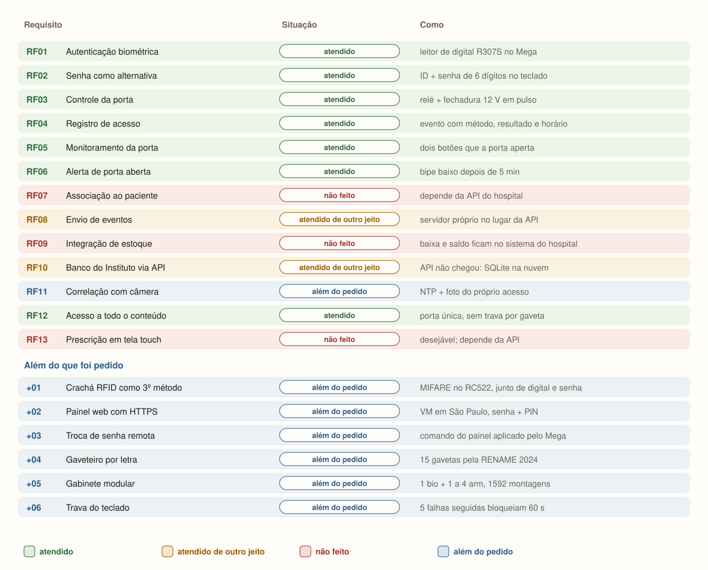
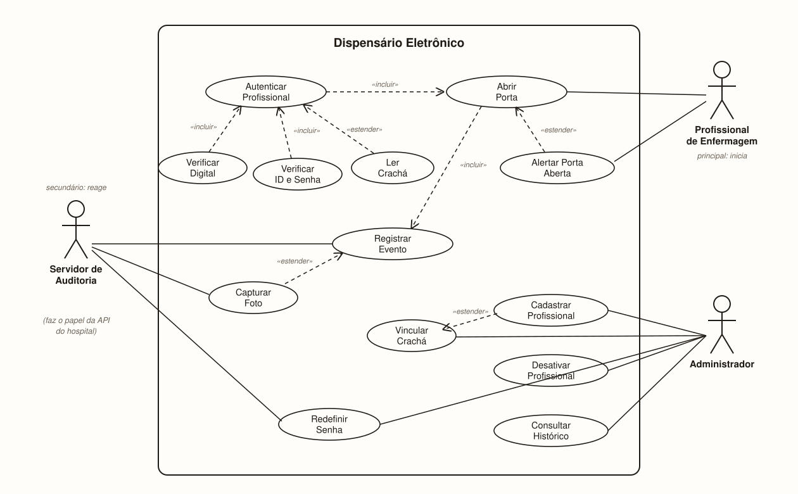
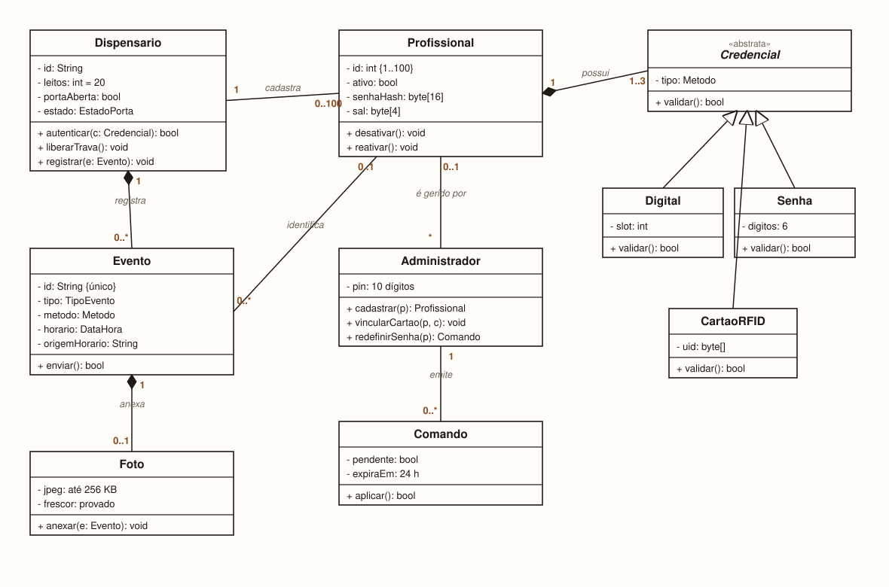
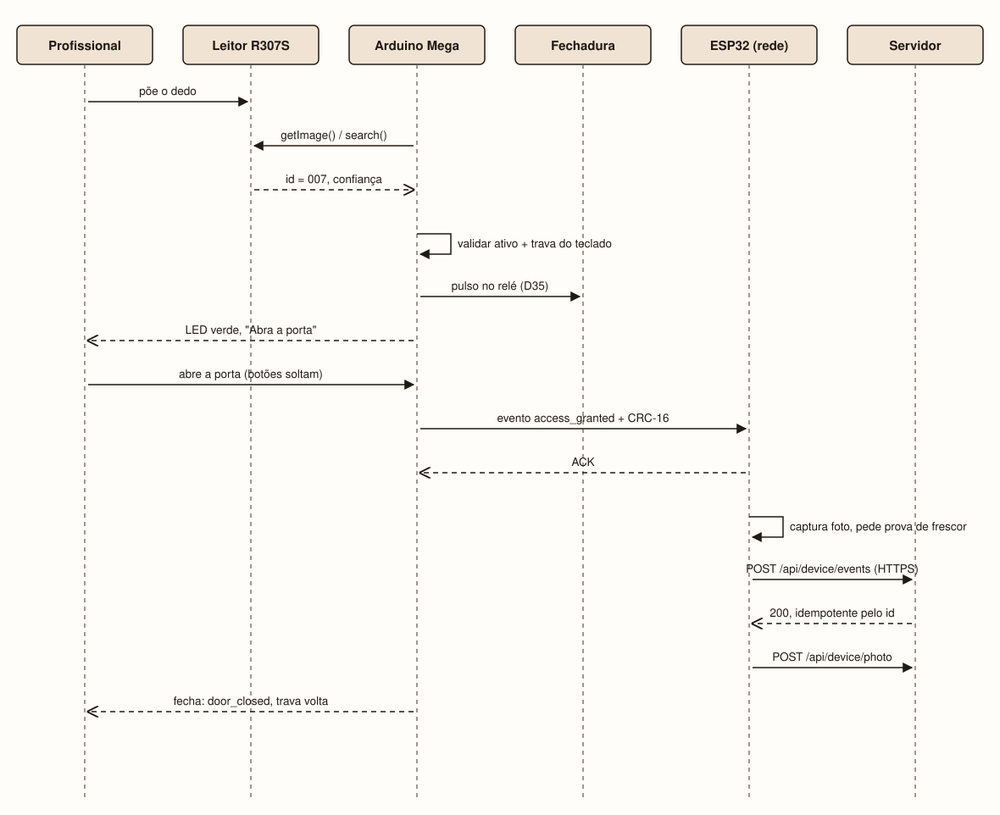
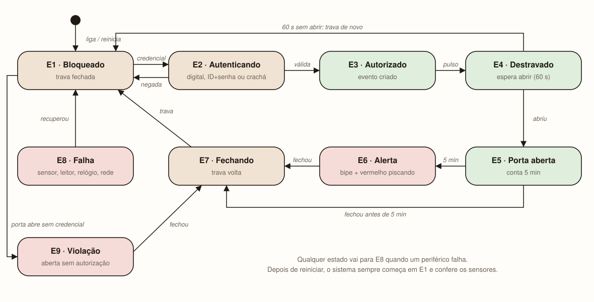

O modelo de ciclo de vida
Tijolo por tijolo, com validação a cada volta.
O dispensário seguiu o modelo incremental: o sistema foi dividido em partes pequenas que se juntam, como tijolos num muro. Primeiro a casca do módulo biométrico, depois a interface, depois o armário, a porta, o gaveteiro, a bancada eletrônica, o servidor e a nuvem. Cada incremento foi construído de forma independente e depois integrado ao que já existia.
Dentro de cada incremento o trabalho foi iterativo: construir, avaliar, ajustar e repetir, sem esperar acerto na primeira vez. O chassi passou de três lâminas para duas; a altura do módulo caiu de 1500 para 1000 mm; o leitor de digital teve três formas de fixação até a definitiva. Cada volta levou ao corte de um retalho de teste antes da peça final, que é a prototipagem e o gerenciamento de risco do modelo em espiral aplicados à fabricação.
O cascata não serviria aqui. Os requisitos não estavam 95% mapeados no início: a API do hospital nunca chegou, a câmera saiu e voltou ao escopo, e o cliente precisava ver algo funcionando antes do fim.
| Fase | Foco | No projeto |
|---|---|---|
| Iniciação | escopo e visão geral | entrevista de 20/08, Fase 1 entregue em 26/08 |
| Elaboração | arquitetura | componentes e contrato hardware/software (09/09), chassi modular (03/09 a 07/10) |
| Construção | implementar e testar | cortes de 03/09 a 17/11, bancada de 06/11, servidor de 07/11, mais de 200 testes automáticos |
| Transição | entregar e dar suporte | apresentação ao cliente, site, repositórios públicos e documentação |
Partes interessadas
Cliente
Instituto Mário Penna, pela Diretoria de Tecnologia, Inovação, Ensino e Pesquisa. Tem o poder de aceite.Usuários
Profissionais de enfermagem que abrem o armário; farmácia e logística, que repõem duas vezes ao dia; administrador do sistema.Outros
Pacientes (o alerta não pode incomodar), equipe de TI e redes do hospital, a disciplina e o professor orientador, o próprio grupo.Elicitação
Como os requisitos foram descobertos.
| Técnica | O que foi feito |
|---|---|
| Entrevista semiestruturada | Encontro de 20/08/2026 com o cliente: roteiro de 9 blocos de perguntas, aberto a assuntos que surgiram na conversa. Gravada. |
| Gravação e transcrição | 4 transcrições, 35 páginas, relidas para separar o que é do equipamento e o que é do sistema hospitalar. |
| Análise de documentos | O slide do próprio Instituto sobre o equipamento, a RENAME 2024 do SUS (265 princípios ativos) e datasheets de cada componente. |
| Especialista do domínio | Perguntas de engenharia ao professor da disciplina e conferência dos esquemas elétricos com ele. |
| Validação por protótipo | Cada peça cortada primeiro num retalho e encaixada no componente real; cada bloco da bancada testado antes do seguinte. |
O que a elicitação revelou, e que mudou o projeto: o hospital controla custo mas não uso; não sabe dizer se o medicamento chegou ao paciente; a operação hoje passa por farmácias centrais com fila; e as soluções comerciais chegam a R$ 4 milhões, fora do alcance de um hospital 100% SUS.
Classificação dos requisitos
Um exemplo real de cada tipo.
| Tipo | Exemplo no dispensário |
|---|---|
| De usuário | "Quero abrir o armário rápido, mesmo com o leitor falhando." |
| De sistema funcional | RF02: aceitar ID + senha de 6 dígitos quando a digital não for lida; travar o teclado por 60 s na 5ª falha seguida. |
| Não funcional | RNF06: o alerta de porta aberta é ouvido perto do equipamento sem incomodar o paciente (bipe de 250 ms a cada 2 s, só depois de 5 min). |
| De domínio | Confidencialidade dos dados de saúde: nenhum evento carrega senha nem modelo de digital; a senha é guardada como SHA-256 com sal. |
| De interface | LCD a 1170 mm do piso e teclado a 910 mm, pela faixa de alcance de normas de acessibilidade; cores do LED com significado fixo. |
Métricas usadas nos não funcionais: negociação TLS de ~300 ms e pedidos de 22 a 50 ms (velocidade); fila de 16 eventos no Mega e 8 na câmera (tamanho); reinício sempre em estado travado (robustez); 100 cadastros com IDs nunca reutilizados (confiabilidade do registro).
Matriz de rastreabilidade
Cada requisito da Fase 1 até a solução, com a situação em 18/11/2026.

O que foi pedido e não foi feito, e por quê
- RF07, RF09, RF10 e RF13 dependem da API do sistema hospitalar, que não foi fornecida até a entrega. O servidor próprio faz o papel dela, com as mesmas regras: identificador único por evento, envio repetido sem duplicar, horário com origem.
- Rede autorizada para equipamentos hospitalares: o protótipo usa um roteador próprio, porque o segmento do hospital exige a equipe de redes de lá.
- Fila persistente: os eventos pendentes ficam em memória e se perdem num reinício. Aceito para a demonstração e declarado no critério CA10.
O que foi além
- Um terceiro método de acesso, o crachá RFID, que conversa com o fluxo atual do hospital (hoje o profissional já bipa o crachá na farmácia).
- A foto do próprio acesso, que a câmera tira e o servidor guarda junto do evento, com prova de que a foto é daquele acesso e não de um anterior.
- Painel web com HTTPS numa VM em São Paulo, troca de senha remota, backup diário e parada automática de custo.
- Gaveteiro por letra pela RENAME 2024 e gabinete modular: 1 módulo biométrico com 1 a 4 armários, 1592 montagens com as mesmas peças.
Casos de uso
Atores principais à direita, porque iniciam; o secundário à esquerda, porque reage. Cada caso nomeado por verbo e substantivo.

| Caso de uso: Abrir Porta | |
|---|---|
| Ator | Profissional de Enfermagem |
| Pré-condições | profissional cadastrado e ativo; porta fechada; sistema em E1 (Bloqueado) |
| Fluxo principal | 1. põe o dedo no leitor. 2. o sistema identifica o ID. 3. o sistema pulsa a fechadura e acende o verde. 4. o profissional abre a porta em até 60 s. 5. o sistema registra a abertura. 6. o profissional retira o item e fecha. 7. o sistema registra o fechamento e trava. |
| Fluxos alternativos | digital não lida: ID + senha ou crachá. Credencial negada: vermelho, evento de negação, 5ª falha trava o teclado por 60 s. Porta não aberta em 60 s: trava de novo com três bipes. Porta aberta mais de 5 min: alerta até fechar. |
| Pós-condições | porta travada; eventos de acesso, abertura e fechamento registrados com quem, quando, método e dispensário |
Diagrama de classes
O modelo conceitual: os elementos centrais e como se relacionam, antes do código.

Credencial é abstrata e se especializa em Digital, Senha e CartaoRFID (generalização). Profissional é composto pelas credenciais dele: desativar a pessoa desativa as três. Um Dispensario registra de 0 a muitos eventos, e cada Evento anexa no máximo uma Foto. O Administrador não muda a senha direto: ele emite um Comando, que só vale depois que o Mega confirma.
Diagrama de sequência
Um acesso por digital, do dedo ao servidor.

A decisão de abrir acontece inteira no Mega, antes de qualquer mensagem de rede. A rede entra depois, só para auditoria: se o Wi-Fi cair no meio, a porta já abriu e o evento espera na fila.
Diagrama de estados

O que cada iteração ensinou
Íamos fazer uma coisa, aprendemos outra, mudamos.
| Íamos | Aprendemos | Fizemos |
|---|---|---|
| Paredes de 3 lâminas de MDF presas com M3 | 36 peças e centenas de furos para um ganho de rigidez que duas lâminas já davam | 2 lâminas (6 mm) presas por abraçadeira de nylon nos cantos |
| Armário de 1260 x 1500 mm | Não cabe na mesa de 1150 x 1000 da cortadora sem emenda | 750 x 1000 x 250, que sai inteiro em 6 cargas |
| Vão do LCD pelo datasheet (~71 x 24) | A peça real tinha ~77 x 25 | Medida tirada da foto da peça com régua |
| Leitor de digital preso por batentes | Os batentes não seguraram no teste | Garfo, depois cola quente num vão de 20 x 18 |
| 30 gavetas, uma por letra | Várias letras vazias; a letra A sozinha tem 29 ativos | 15 gavetas por faixa de letras, piso de 29 na mais cheia |
| Parâmetros da tabela da máquina | A máquina rendia abaixo da tabela em tudo | Matriz de calibração cortada e lida; corte a 10 mm/s e 74,5% |
| Leitor de digital falhando a cada 10 s | LED sem resistor balançava o terra do leitor | Dois fios de terra extras e 330 Ω por cor |
Horas de trabalho
Estimativa bruta, de 20/08 a 18/11/2026: 13 semanas.
| Quem | Horas por semana | Total |
|---|---|---|
| Joshua Azze | ~20 | ~260 h |
| Beatriz Samaha | ~7 | ~91 h |
| Bruna Bento | ~7 | ~91 h |
| Marcelo Reis | ~7 | ~91 h |
| Total | ~41 | ~533 h |
Em números do próprio trabalho: 134 commits no repositório do gabinete, 39 no de firmware e servidor, 48 projetos do LightBurn e 60 DXF só no armário, mais de 200 testes automáticos no firmware e no servidor e cerca de 12.400 linhas de código e configuração no sistema embarcado.
Quanto custa
Estimativas por preço de varejo de 2026, não por nota fiscal.
O protótipo
| Item | R$ |
|---|---|
| Arduino Mega 2560 compatível | 95 |
| ESP32 DevKit | 50 |
| ESP32-CAM com OV2640 | 119 |
| Leitor de digital | 110 |
| Leitor RFID RC522 e cartões | 20 |
| LCD 1602 e teclado 4x4 | 32 |
| Fechadura 12 V e relé | 82 |
| Fonte 12 V, LM2596 e MB102 | 75 |
| LED, buzzer, botões, transistores, diodo, resistores, fios | 61 |
| MDF 3 mm (chapas, incluindo testes) | 350 |
| Acrílico 1,5 mm | 60 |
| Abraçadeiras, parafusos, porcas, cola | 60 |
| Servidor na nuvem e domínio | 0 (crédito) |
| Total em material | ~1.114 |
Corte a laser no laboratório da faculdade, sem custo de máquina. Se as ~533 horas fossem pagas a R$ 40, seriam mais ~R$ 21 mil de trabalho.
Um dispensário aberto, por unidade
| Item | R$ |
|---|---|
| Placa única com ESP32-S3 e câmera (PCB própria) | 250 |
| Leitor de digital e leitor de crachá | 130 |
| Tela sensível ao toque de 7" para a prescrição | 350 |
| Fechadura de uso contínuo e sensores magnéticos de porta | 180 |
| Fonte com bateria (12 V) | 150 |
| Gabinete e gaveteiro cortados em CNC | 750 |
| Ferragens | 150 |
| Montagem (8 h) | 320 |
| Total por unidade | ~2.280 |
Uma unidade atende 20 leitos. O teto de R$ 4 milhões citado para as soluções comerciais pagaria mais de 1.700 dispensários abertos. O servidor é um só para todas as unidades: uma VM pequena custa algo como R$ 60 por mês.
Rumo a um modelo aberto
O protótipo nasceu para um cliente, mas tudo nele pode servir a outros hospitais.
Os arquivos de corte, o gerador paramétrico e o design system já são públicos, sob licenças GPL v2 e MIT. Um hospital com acesso a uma cortadora a laser, ou a uma marcenaria com CNC, consegue reproduzir o gabinete trocando números num JSON. O firmware decide tudo localmente e o servidor não tem nenhuma dependência externa, então cabe numa máquina do próprio hospital.
Para virar um projeto aberto de verdade faltam três coisas: uma placa de circuito única no lugar da protoboard, a integração com sistemas hospitalares por um padrão aberto em vez de uma API específica, e conversas com profissionais de outras instituições para validar os requisitos fora do Mário Penna.